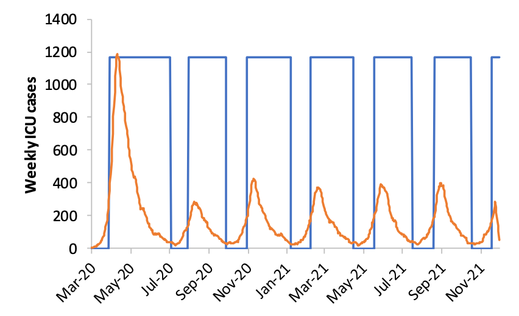

无症状感染比例有多大？多项研究透露“冰山一角”
原文链接 备份链接 你已选中了添加链接的内容 23.03.2020本文字数：2341，阅读时长大约4分钟 导读：新冠无症状感染者的比例有多高，传染性有多强，是驱动这种全球流行病传播的未知重要因素。多项数据显示，无症状感染者的比例可能远高于 …

无症状感染者正再次成为焦点，这些感染者让新冠疫情的遏止变得更加艰难。
3 月 20 日，《自然》杂志报道称，60% 的新冠感染者可能属于无症状或者症状轻微，而这些感染者可能会导致疫情二次暴发。
无独有偶，3 月 16 日的《科学》杂志发表来自来自中国、英国、美国的研究人员联合完成的研究称，在 1 月 23 日武汉封城之前，中国所有实际上的感染者中，未记录的新冠病毒感染者比例高达 86%。研究称，这些未记录的感染者因其症状轻微或未表现，是造成疫情迅速蔓延的主要原因，也是疫情初期难以防控的核心。
无症状感染者会导致新冠疫情再次暴发吗？这个问号已经变得越来越大，答案也越来越变得急迫。
 （来源：哥伦比亚大学）
（来源：哥伦比亚大学）
无症状感染者的比例成谜

无症状感染者具有传播病毒的能力吗？多方答案是肯定的。
中华预防医学会新型冠状病毒肺炎防控专家组在《中华流行病学杂志》发表文章称，目前传染源主要是新型冠状病毒感染的患者，隐性感染者（即无症状感染者）也可能成为传染源，主要经呼吸道飞沫传播和接触传播，人群普遍易感。
文章称，由于存在一定比例的隐性感染者，并且这部分人群同样具有传染性，仅根据有无症状来筛查密切接触者无法满足隔离传染源的目的，建议对密切接触者在发现时即进行采样检测，以尽早发现可能存在的传染性，并在医学观察解除时开展病原筛查，以防范隐性感染者处于排毒期。
据纽约时报报道，美国国家过敏和传染病研究所所长安东尼 · 福奇 (Anthony Fauci) 博士说，“我认为，毫无疑问，无症状病毒携带者会把病毒传染给其他人。”
一篇发表在《新英格兰医学杂志》的研究称，无症状感染者亦有传播能力。研究发现从无症状患者的样本中检测到的病毒载量与有症状感染者很接近，这表明了无症状或轻度症状患者都具有传播潜力，并且在感染早期就可能拥有较强的传染性。
无症状感染者到底有多少呢？
中华预防医学会新型冠状病毒肺炎防控专家组在同期《中华流行病学杂志》另一篇文章中指出，截至 2020 年 2 月 11 日，中国内地共报告 72314 例病例，其中无症状感染者 889 例（1.2%）。
这个数据可能被大大低估了。
据《自然》杂志报道，3 月 6 日发布在医学预印本 medRxiv 的一项研究指出，截至 2 月 18 日，武汉有 3.74 万人感染了新冠病毒，其中大部分属于症状轻微或没有症状但仍具有传染性的感染者。
该研究的领衔者、华中科技大学公共卫生学院院长邬堂春教授称：最保守的估计，至少 59% 的感染者没有经过检测，并可能感染他人。这或许可以解释为什么病毒传播得如此之快。
不过，《自然》杂志引述佐治亚州立大学的流行病学家杰拉多 · 乔威尔（Gerardo Chowell）的看法称，邬堂春教授的研究结论可能高估了无症状感染者的比例。
日本 “钻石公主” 号邮轮在不少科学家看来是一个更加典型的研究样本。杰拉多 · 乔威尔参与的一项研究发现，“钻石公主”号邮轮的新冠感染中无症状者比例是 17.9%。需要指出的是，“钻石公主”号的大多数确诊乘客是 60 岁以上的老年人，而老年人在新冠疫情中容易表现出症状，从而降低无症状感染者的比例。
上海儿童医学中心的一项针对全国 731 名名受感染儿童的研究发现，55.3% 的儿童为轻微或无症状。
无症状感染者未纳入确诊
无症状感染者具有传播能力，而其比例又不确定。这让日前武汉市的一则 “公示” 更加值得关注。
3 月 20 日，网上流传的一份 “公示” 显示，19 日硚口区一小区有一新增确诊病例。随后硚口区防控指挥部回应称，网传患者系无症状感染者，并非确诊病例。
据新华社报道，武汉市韩家墩街综合社区丽水康城小区居民张某某，因淋巴结肿块 (大脖子病) 去医院就诊，体温正常，无发热咳嗽等症状。其新冠筛查第一次核酸结果为阴性。3 月 19 日第二次核酸检测结果为阳性，并收治入院。根据《国家卫健委办公厅关于印发新型冠状病毒肺炎防控方案 (第六版) 的通知》，张某某系无症状感染者，不是确诊病例。3 月 20 日再次采集患者痰拭子、咽拭子，核酸检测均为阴性。
根据《新型冠状病毒肺炎防控方案（第六版）》，无症状感染者的定义为：无临床症状，呼吸道等标本新型冠状病毒病原学或血清特异性 IgM 抗体检测阳性者。
2 月 14 日的国务院联防联控机制发布会上，国家卫生健康委副主任曾益新介绍，关于新型冠状病毒无症状感染者一般指没有发烧、咳嗽等临床症状，但是标本检测又呈阳性。
曾益新称，无症状感染者主要发现来源有四个：第一，新冠肺炎病例的密切接触者，在医学观察期发现了一些这样的人；第二，在聚集性疫情的调查中，在开展一些主动检测的过程中，我们可能发现无症状感染者；第三，在新冠肺炎病例的传染源追踪过程中，对暴露人群进行主动检测时可能发现无症状感染者；第四，在对有新冠肺炎病例、持续传播地区的旅行史和居住史的人员主动检测时，可能会发现无症状感染者。
目前中国对于无症状感染者的管理措施是，集中隔离 14 天，原则上两次连续标本核酸检测阴性者（采样时间至少间隔 24 小时）可解除隔离。如果无症状感染者在集中隔离期间出现症状，则将其归为确诊病例，予以报告。
不过，有学者对无症状感染者不纳入确诊病例持有异议。
《自然》杂志引述哈佛大学公共卫生学院传染病免疫学家和流行病学家迈克尔 · 米娜（Michael Mina）的看法称，无症状感染者不计入确诊病例，会不利于建立病毒模型并了解其传播范围。
如果忽略无症状感染者，新冠病毒的病死率就会被高估，同时传播力会被低估，这可能会让人们错误评估病毒潜在的影响。
据财新网报道，有专家称，国家卫健委新冠肺炎诊疗方案修订过程中曾对无症状感染者能不能诊断为确诊病例有过讨论，但最后遭到否决。争议的焦点在于，如果无症状感染者不算新冠患者，那么核酸阳性还能不能作为诊断的金指标？并且，既然无症状感染者携带了新冠病毒，这部分人就有可能转化为病人。
在《自然》杂志的报道中，中国疾控中心流行病学首席专家、研究员吴尊友认可将无症状感染者不计入确诊病例的做法。他认为，核酸检测阳性并不一定意味着感染了病毒，实验室检测通常会通过咽拭子或鼻拭子检测到病毒的遗传物质，但在一些人身上，病毒可能尚未进入细胞并开始复制。
纽约哥伦比亚大学病毒学者安吉拉 · 拉斯穆森（Angela Rasmussen）则认为，病毒通常在宿主内部复制才能达到可检测的水平。
穷尽检测是不可能的
无症状感染者表现得与常人无异，他们的生活和工作照旧，与人的接触也没有警觉，那么可以有效地传播疾病。
即便体温枪的温度传感器非常精确，也难以发现所有的感染者。感染者可能需要数天的时间才开始发烧，加上已经发烧的旅行者可能会服用退烧药来抑制症状，这种情况下，仅仅用体温枪来发现感染者可能意味着遗漏新病例。
那么，有没有必要穷尽一切追踪和检测手段来发现无症状感染者呢？
据路透社 3 月 19 日报道，荷兰开始实施一大型项目，对该国献血样本进行检测，以查找荷兰有多少新冠无症状感染者。该项目计划每周对 1 万个献血样本进行检测。
3 月 20 日，纽约时报报道称，哥伦比亚大学研究人员利用纽约时报的数据计算出，即使能把传染率降到一半，美国未来两个月感染人数也将达到 65 万。这是因为有很多感染者症状轻微或无症状。然而美国的核酸检测能力有限，穷尽检测不现实。
最好的解决办法可能是开发保护性疫苗。如果没有疫苗产生的话，高强度的干预措施也非最佳选项。严厉干预虽然能迅速减缓病毒传播，但不具有可持续性，一旦放松干预，就会二次暴发。
图 | 一周内有 100 例 ICU 病患时即开启干预措施，一周内有 50 例 ICU 病患时即关闭。在这个模型里，若以 R0=2.2 来计算，英国人在未来一年内有三分之二的时间需要生活在开启措施的日子里。每周 ICU 发生率显示为橙色，蓝框为干预的有效时间。（来源：帝国理工学院）
英国探索了一个新选项。帝国理工学院在一份报告中将英国能够采取的措施都考虑进来，分类再加以各种组合，分别作出预测，最终推算出，在发现病例就隔离的基础上，弹性地让人们保持社交距离（如果有必要再加上关闭学校）是最佳选项。详见 DeepTech 此前报道《伦敦或将封城，但英国仍保留 “群体免疫” 逻辑，以图避免疫情二次暴发》。
该报告称，这样的选择既能避免发生武汉那样的医疗资源挤兑，也可以避免疫情二次暴发。
-End-

原文链接 备份链接 你已选中了添加链接的内容 23.03.2020本文字数：2341，阅读时长大约4分钟 导读：新冠无症状感染者的比例有多高，传染性有多强，是驱动这种全球流行病传播的未知重要因素。多项数据显示，无症状感染者的比例可能远高于 …
原文链接 备份链接 【财新网】（记者 杨睿）新冠病毒看起来远比SARS冠状病毒“狡猾”。一篇发表国际顶级医学期刊《新英格兰医学期刊》（NEJM）上的通讯文章首次报告称，德国研究人员从两名无症状感染者的咽拭子中分离出新冠病毒，表明无症状者 …
原文链接 备份链接 编译： 步摇 本文来源：财经涂鸦 （ID：caijingtuya） “ 本文来自《自然》杂志3月20日刊登的报道。 ” 随着世界范围内冠状病毒的爆发激增，研究团队正在了解一个至关重要的流行病学难题，多少比例的受感染者有 …
原文链接 备份链接 【财新网】（记者 丁捷 综合）国内疫情逐渐稳定，随着多省本土确诊病例陆续“清零”后，多地下调重大突发公共卫生事件应急响应级别，湖北生产生活秩序恢复；另一方面，尽管新增病例骤减，部分无症状感染者出现，并未纳入确诊病例，引 …
原文链接 备份链接 澎湃新闻记者 贺梨萍 张若婷 可查资料显示，“钻石公主”游轮上1723名接受检测的旅游者中，有189名是无症状新冠病毒感染者。这显然暗示：在人群中存在着大量的无症状感染者或者症状轻微患者，但他们未被发现。 日前，南京市 …